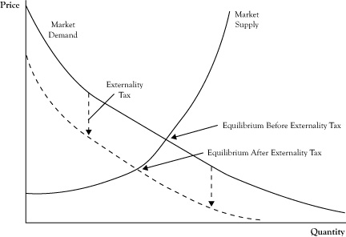

In the previous chapter, we recognized the possibility that markets left to their own devices may not result in the best outcomes when viewed from the perspective of the net impact on all participants in the market. In some cases, the difference between an unregulated market and what might be possible with some outside influence invites the consideration of measures that might be taken by a government or other monitoring agency. In this final chapter, we will examine some of the key categories where intervention may be considered and what regulatory measures can be taken.
The well-being and stability of any society depends on whether the members of that society are able to acquire the goods and services they need or want. In primitive societies, these issues were settled by either a recognized authority figure (e.g., a king or military leader) or use of force. In modern times, even though we still have kings and dictators, the source of authority is likely to be government laws and agencies. Societies that primarily use centralized authorities to manage the creation and distribution of goods and services are called collectivist economies. The philosophy of communism is based on the prescription that centralized authority is the best means of meeting the needs and wants of its citizens.
For millennia, even collectivist societies have included some level of commerce in the form of trade or purchases with currency. The use of the word “market” to describe the activities of buyers and sellers for goods and services derives from town gathering areas where such exchanges took place. Early markets were limited in terms of how much of the total goods and services in a society were negotiated, but in recent centuries, markets took an increasing role in the allocation of goods and services, starting in Europe. Today, most developed countries operate in a manner where exchange by markets is the rule rather than the exception. Societies that rely primarily on markets to determine the creation of goods and services are called free market economies.
Countries will lean toward being either more free market based or more collectivist, but no country is purely one or the other. In the United States, which is predominantly a free market economy, some services, like fire protection, are provided by public authorities. In China, which is a communist nation, free market activity has thrived in recent decades. As we will discuss in this chapter, even when markets are the main vehicle for allocation, there is some degree of regulation on their operation.
There is a subfield of economics called “welfare economicsA subfield of economics that focuses on evaluating the performance of markets.” that focuses on evaluating the performance of markets. Two of the criteria used to assess markets are efficiency and equity.
Efficiency is a shortened reference to what economists call Pareto efficiencyThe outcome of a set of exchanges between decision-making units in a market or network of markets when it is impossible to modify how the exchanges occurred to make one party better off without making another party worse off; also known as efficiency.. The outcome of a set of exchanges between decision-making units in a market or network of markets is called Pareto efficient if it would be impossible to modify how the exchanges occurred to make one party better off without making another party decidedly worse off. If there is a way to change the exchanges or conditions of the exchanges so that every party is at least as satisfied and there is at least one party that is more satisfied, the existing collection of exchanges is not Pareto efficient.
Pure Pareto efficiency is an ideal rather than a condition that is possible in the complex world in which we live. Still, in clear cases where some intervention in the market can result in significant overall improvement in the pattern of exchanges, regulation merits consideration.
One circumstance where this notion of efficiency is not fulfilled is when there is waste of resources that could have some productive value. When markets leave the useful resources stranded to spoil or be underutilized, there is probably a way to reconfigure exchanges to create improvement for some and at a loss to no one.
In the case of monopoly, which we examined in Chapter 7 "Firm Competition and Market Structure", the price and quantity selected by the monopolist is not efficient because it would be possible, at least in principle, to require the monopolist to set the price at the perfect competition equilibrium, reclaim the deadweight loss in consumer surplus and producer surplus, and redistribute enough of the surplus so the monopolist is as well off as it was at the monopoly price and the consumers are better off.
EquityThe issue of whether the distribution of goods and services to individuals and the profits to firms are fair. corresponds to the issue of whether the distribution of goods and services to individuals and the profits to firms are fair. Unfortunately, there is no simple single principle, like Pareto efficiency, that has been adopted as the primary standard for equity. Although there is general support for the idea that the distribution of goods and services ought to favor those with greater talents or those who work harder, there are also those who view access to basic goods and services as reasonable expectations of all citizens. Despite the impossibility of developing a general consensus on what constitutes equity, when enough people become concerned that the distribution of goods and services is too inequitable, there are likely to be pressures on those in political power or political unrest.
Most microeconomists tend to view active regulation of individual markets as worthy of consideration when there are inefficiencies in the functioning of those markets. Since managerial economics (and this text) has a microeconomics focus, we will address the merit of market regulation from this perspective as well.
Problems of inequity are usually regarded as a problem of macroeconomics, best handled by wealth transfers, such as income taxes and welfare payments rather than intervention in the markets for goods and services. Still, there are instances where regulatory actions directed at specific markets reflect equity concerns, such as requiring companies to offer basic services at lifeline rates for low-income customers.
When a market operates inefficiently, economists call the situation a market failureThe situation that occurs when a market operates inefficiently.. In this chapter, we will address the generic types of market failure:
In all four situations, the case can be made that a significant degree of inefficiency results when the market is left to proceed without regulation.
Economists are fond of repeating the maxim “There is no free lunch.” Regulation is not free and is difficult to apply correctly. Regulation can create unexpected or undesirable effects in itself. At the conclusion of the chapter, we will consider some of the limitations of regulation.
In Chapter 7 "Firm Competition and Market Structure", we considered how monopolies and monopsonies would try to force changes in the price and quantity to move the market to their advantage, but at an even greater cost to the other side of the market. Again, this is not simply an equity concern that one party is getting most of the surplus created by the market (although that may be a legitimate concern) but rather the exertion of market power results in a net loss in total social surplus.
Seller competition is not only helpful in lowering prices and increasing volume and consumer surplus, but firms also compete in terms of product differentiation. When a monopoly or oligopoly emerges and the seller(s) have a sustainable arrangement that generates economic profits, the firms do not have the incentive to spend money in developing better products. The stagnation of the product sold represents another loss in potential value to the consumer.
Unfortunately, monopolies or tight oligopolies can readily develop in markets, especially when there are strong economies of scale and market power effects. For this reason, there are general antitrust laws that empower governments to prevent the emergence of monopolies and tight oligopolies. Some of these laws and regulations actually cite measures of market concentration that can be used as a basis for opposing any buyouts or mergers that will increase market concentration. Where market concentration has already advanced to high levels, firms can be instructed to break up into separate companies. About a century ago, monopolies had developed in important U.S. industries like petroleum, railroads, and electric power. Eventually, the U.S. federal government mandated these monopolies split apart.
As mentioned in earlier chapters, the fact that there are a few large sellers does not automatically constitute abusive use of market power if there is free entry and active competition between sellers. However, if those large sellers collude to hold back production volumes and raise prices, there is a loss in market surplus. The United States has laws that outlaw such collusion. While firms may be able to collude with indirect signals that are difficult for government antitrust units to identify at the time, courts will consider testimony that demonstrates that collusion has taken place.
In Chapter 7 "Firm Competition and Market Structure", we discussed the market power tactics of using low prices to drive out existing competitors and keep out new entrants. When the purpose of the price drop is merely to chase out competition, the practice is labeled predatory pricingThe illegal practice of using low prices for the specific purpose of driving out existing competitors and keeping out new entrants. and is considered illegal. Of course, the firms engaging in price decreases often take the position that they are in a competitive market and are simply competing on the basis of reduced profit margins, just as firms are expected to compete according to the theory of the perfect competition model. Courts are left to determine whether such actions are simply aggressive competition or are intended to create a more concentrated market that allows for greater profits in the long run.
As an alternative to taking actions to limit large firms from exploiting their size, another form of regulation is to encourage more competition by helping small or new competitors. Either subsidies or tax breaks may be offered to help these firms offset the disadvantages of being small in the market and to eventually emerge as an independent player in the market.
In cases where a concentrated seller market exists and the product or service is considered critical to the buyers and the overall economy, the government may decide to intervene strongly by setting a limit on prices or mandating that the product be provided at a minimum quantity and quality.
In situations where there is buyer power, the goal of regulation may be to push prices higher. For example, in agriculture crop markets where the seller farmers often have little market power, but there is concentration on the buyer side, the government will try to keep prices higher by mandating minimum prices or direct assistance to farmers in the form of price support programsA regulation, often used in agricultural markets, through which the government tries to keep prices higher by mandating a minimum price or providing direct assistance to firms that have little market power in the face of buyer concentration..
Another response to market power on one side of the market is to support market power on the other side of the market. Using the crop market example again where there is buyer power, the government has sanctioned the creation of grower cooperatives that control the quantity of the amount sold to processors and thus keep the price higher.
In industries where the minimum efficient scale is very high, it may be that the lowest average cost is achieved if there is only one seller providing all the goods or services. Examples of such a service might be transmission and distribution of electric power or telephone service. This situation often occurs when total costs are very high but marginal costs are low. Economists call such markets natural monopoliesA situation that occurs when total costs are very high but marginal costs are low such that the lowest average cost can be achieved only by one seller..
Unfortunately, if just one firm is allowed to serve the entire market, the firm will be tempted to exploit the monopoly position rather than pass its lower cost in the form of lower prices. One response to this situation is to conclude that the service should be provided by a public agency rather than a private company. In the case of telephone service, European countries often run the telephone system rather than a corporation like AT&T.
Another response is to go ahead and allow the private firm to be the sole seller but require regulatory approval for the prices to be charged. These regulated monopolies are often called public utilitiesA regulated monopoly in which a private firm is the sole seller of a good or service at a price approved by a regulatory agency and that passes the benefits of low average costs to buyers., even though the operator may be a private corporation. In principle, this regulated monopoly could achieve the best of both worlds, letting a private company serve the market, while making sure the buyer is enjoying the benefits of the low average cost. In fact, this notion of a regulated monopoly was first proposed by AT&T when it feared that its near monopoly would be usurped by the government. Governments create agencies like state public utility commissions to review cost information with the public utility corporation in deciding on the prices or service rates that will be approved.
A potential concern when a single provider is allowed to operate as a regulated monopoly is that, without competition, the provider has little incentive for innovation or cost cutting. This could be the case whether the provider operated as a government agency or a public utility corporation. When a public utility corporation understands that it will be reimbursed for its costs plus an amount to cover the opportunity costs of assets or capital contributed by the corporation’s owners, the challenge is to be able to justify the costs rather than seek to trim its costs. Some regulatory agencies try to motivate regulated monopolies to be innovative or cut costs by allowing them to keep some of the surplus created in exchange for lower rates in the future. However, regulation is a game where the regulatory agency and the public utility corporation are both competing and cooperating. And the transaction costs of outside oversight of the regulatory monopoly are substantial. So, as noted earlier, there is no free lunch.
The second generic type of market failure is when parties other than the buyer and seller are significantly affected by the exchange between the buyer and seller. However, these other parties do not participate in the negotiation of the sale. Consequently, the quantities sold and prices charged do not reflect the impacts on these parties.
Economists call the effects of market activity on the third parties externalitiesThe effects of market activity that fall on third parties outside the considerations of buyer and seller. because they fall outside the considerations of buyer and seller. Although the concern with significant externalities is usually due to harm to the third party, externalities can be beneficial to third parties as well. Harmful externalities are called negative externalitiesHarmful effects of market activity that fall on third parties, creating inequities, and that can create inefficiency.; beneficial externalities are called positive externalitiesBeneficial effects of market activity that fall on third parties and that can create inefficiency..
Some examples of negative externalities are pollution of air or water that is experienced by persons other than those directly related to the seller or buyer, injury or death to another person resulting from the market exchange, inconvenience and annoyances caused by loud noise or congestion, and spoiling of natural habitats. Some examples of positive externalities are spillover effectsThe results of research and development used for one product that are applied to other products or firms. of research and development used for one product to other products or other firms, training of a worker by one firm and thereby creating a more valuable worker for a future employer, stimulation of additional economic activity outside the market, and outside benefactors of problem-solving services like pest control.
Negative externalities clearly create an inequity because the third parties are harmed without any compensation. However, significant negative externalities also create inefficiency. Recall that inefficiency means there is a way to make someone better off and no one worse off. Take the case of a negative externality like air pollution caused when an automobile owner purchases gasoline to use in his car. Hypothetically, if a representative for outside parties were present at the negotiation for the sale, she might be willing to pay an amount to the buyer and an amount to the seller in exchange for foregoing the sale by compensating the buyer with the consumer surplus they would have received and the producer with the economic profit they would have received, with the sum of those payments being worth the avoidance of the externality impact of the air pollution.
Even in the case of a positive externality, there is inefficiency. However, in this case, the third parties would actually benefit from more market exchanges than the sellers and buyers would be willing to transact. In principle, if third parties could participate in the market, they would be willing to pay the buyer or seller up to the value of the positive externality if it would induce more market activity.
Regulation of externalities usually takes two forms: legal and economic. Legal measures are sanctions that forbid market activity, restrict the volume of activity, or restrict those who are allowed to participate as buyers and sellers. As examples of these, if an appliance is prone to start fires that might burn an entire apartment complex and injure others besides the buyer, the sale of the appliance might be banned outright. If sales of water drawn from a river would threaten a wildlife habit, sales may be limited to a maximum amount. A firearms manufacturer might be allowed to sell firearms but would be restricted to sell only to people of at least a certain age who do not have a criminal record. Because legal measures require monitoring and enforcement by the government, there are transaction costs. When a legal measure is excessive, it may actually create a reverse form of inefficiency from denying surplus value to buyers and sellers that exceeds the benefit to other parties.
The most practiced economic instrument to address market externality is a tax. Those who purchase gasoline are likely to pay the sum of the price required by the gasoline station owner to cover his costs (and any economic profit he has the power to generate) plus a tax on each unit of gasoline that covers the externality cost of gasoline consumption such as air pollution, wear and tear on existing public roads, needs for expanding public roads to support more driving, and policing of roads.
Theoretically, there is an optimal level for setting a tax. The optimum taxThe value of the marginal externality damage or benefit created by consumption of an additional unit from a market exchange, which is used to correct a positive or negative externality. is the value of the marginal externality damage created by consumption of an additional item from a market exchange. If each gallon of gasoline causes $1.50 worth of externality damage, that would be the correct tax.
In the case of positive externalities, the optimum tax is negative. In other words, the government actually pays the seller an amount per unit in exchange for a reduction of an equal amount in the price. Theoretically, the optimum tax would be the negative of the marginal value of a unit of consumption to third parties. For example, if the positive externality from hiring an unemployed person and giving that person employment skills would be worth $2.00 per hour, the employer could be subsidized $2.00 per hour to make it more attractive for them to hire that kind of person.
Although the notion of an externality tax sounds straightforward, actual implementation is difficult. Even when there is general agreement that a significant externality exists, placing a dollar value on that externality can be extremely difficult and controversial. The optimal tax is the marginal impact on third parties; however, there is no guarantee that the total tax collected in this fashion will be the total amount needed to compensate for the total externality impact. The total collected may be either too little or too much.
Also, recall the impact of a tax from the earlier discussion of comparative statics in competitive markets in Chapter 6 "Market Equilibrium and the Perfect Competition Model". A tax has the impact of either raising the supply curve upward (if the seller pays the tax) or moving the demand curve downward (if the buyer pays the tax). See Figure 8.1 "Change in Market Equilibrium in Response to Imposing an Externality Tax" for a graphic illustration of a tax charged to the buyer. To the extent that the supply and demand curves are price elastic, the tax will lower the amount consumed, thereby diminishing the externality somewhat and possibly changing the marginal externality cost. Consequently, actual externality taxes require considerable public transaction costs and may not be at the correct level for the best improvement of market efficiency.
Figure 8.1 Change in Market Equilibrium in Response to Imposing an Externality Tax
Note the tax may cause a decrease in the equilibrium quantity, which may change the optimal externality tax.
The economist Ronald Coase, whom we mentioned earlier in the context of the optimal boundaries of the firm and transaction costs, postulated that the problem of externalities is really a problem of unclear or inadequate property rights.See Coase (1960). If the imposition of negative externalities were considered to be a right owned by a firm, the firm would have the option to resell those rights to another firm that was willing to pay more than the original owner of the right would appreciate by keeping and exercising the privilege.
For those externalities that society is willing to tolerate at some level because the externality effects either are acceptable if limited (e.g., the extraction of water from rivers) or come from consumption that society does not have a sufficiently available alternative (e.g., air pollution caused by burning coal to generate electricity), the government representatives can decide how much of the externality to allow and who should get the initial rights. The initial rights might go to existing sellers in the markets currently creating the externalities or be sold by the government in an auction.
An example of this form of economic regulation is the use of “cap and tradeThe regulation of greenhouse gas emissions by giving firms the right to emit a certain amount of pollutants or resell those rights to another firm.” programs designed to limit greenhouse gas emissions. In cases where this has been implemented, new markets emerge for trading the rights. If the right is worth more to another firm than to the owner, the opportunity cost of retaining that right to the current owner will be high enough to justify selling some of those rights on the emissions market. If the opportunity cost is sufficiently high, the owner may decide to sell all its emissions rights and either shut down its operations or switch to a technology that generates no greenhouse gases.
If the value of emissions rights to any firm is less than the externality cost incurred if the right is exercised, the public can also purchase those externality rights and either retire them permanently or hold them until a buyer comes along that is willing to pay at least as much as the impact of the externality cost to parties outside the market exchange.
Next, we will consider the third generic type of market failure, or the inability for a market to form or sustain operation due to free riders, by looking at two causes of this kind of failure in this section and the next section. Although the sources are different, both involve a situation where some party benefits from the market exchange without incurring the same cost as other sellers or buyers.
New products and services are expensive for the first firm to bring them to market. There may be initial failures in the development of a commercial product that add to the cost. The firm will start very high on the learning curve because there is no other firm to copy or hire away its talent. The nature of buyer demand for the product is uncertain, and the seller is likely to overcharge, undercharge, or alternatively set initial production targets that are too high or too low.
If the firm succeeds, it may initially have a monopoly, but unless there are barriers of entry, new entrant firms will be attracted by the potential profits. These firms will be able to enter the market with less uncertainty about how to make the product commercially viable and the nature of demand for the product. And these firms may be able to determine how the initial entrant solved the problems of designing the product or service and copy the process at far less initial cost than was borne by the initial entrant.
If the product sold by the initial firm and firms that enter the market later look equivalent to the buyer, the buyer will not pay one of these firms more than another just based on its higher cost. If the market becomes competitive for sellers, the price is likely to be driven by the marginal cost. New entrant firms may do well, but the initial entrant firm is not likely to get a sufficient return on the productive assets it had invested from startup. In effect, the other firms would be free ridersA firm that benefits from the startup costs of an initial entrant in a market without having to contribute to those costs; a person who prefers to let someone else pay for a public good. that benefit from the startup costs of the initial entrant without having to contribute to that cost.
The market failure occurs here because, prior to even commencing with a startup, the would-be initial entrant may look ahead, see the potential for free riders and the inability to generate sufficient profits to justify the startup costs, and decide to scrap the idea. This market failure is a market inefficiency because it is hypothetically possible for the initial entrant, subsequent entrants, and buyers to sit at a negotiation and reach an arrangement where startup costs are shared by the firms or buyer prices are set higher to cover the startup costs, so that all firms and buyers decide they would be better off with that negotiated arrangement than if the market never materialized. Unfortunately, such negotiations are unlikely to emerge from the unregulated activities of individual sellers and buyers.
One of the main regulatory measures to address this problem is to guarantee the initial entrant a high enough price and sufficient volume of sales to justify the up-front investment. PatentsA means by which the developer of a product or service that incorporates a new idea or process is given a monopoly for a certain period of time. are a means by which a product or service that incorporates a new idea or process gives the developer a monopoly, at least for production that uses that process or idea, for a certain period of time. Patents are an important element in the pharmaceutical industry in motivating the development of new drugs because there is a long period of development and testing and a high rate of failure. Companies selling patent-protected drugs will sell those products at monopoly prices. However, the process for manufacturing the drug is usually readily reproducible by other companies, even small “generic” manufacturers, so the price of the drug will drop precipitously when patent protection expires. In fact, patent-holding firms will usually drop the price shortly prior to patent expiration in an attempt to extract sales from the lower portion of the demand curve before other firms can enter.
In cases where there is not a patentable process, but nonetheless a high risk of market failure due to frightening away the initial entrant, government authorities may decide to give exclusive operating rights for at least a period of time. This tool was used to encourage the expansion of cable television to the initial entrant in a region to justify the high up-front expenses.
Other government interventions can be the provision of subsidies to the initial entrant to get them to market a new product. The government may decide to fund the up-front research and development and then make the acquired knowledge available to any firm that enters the market so there is not such a difference between being the initial entrant or a subsequent entrant. Another option is for the government itself to serve in the role of the initial entrant and then, when the commercial viability is demonstrated, privatize the product or service.
Most goods and services that are purchased are such that one person or a very limited group of persons can enjoy the consumption of the good or, for a durable good, the use of that good at a specific time. For example, if a consumer purchases an ice cream bar, she can have the pleasure of eating the ice cream bar or share it with perhaps one or two other people at most. A television set can only be in one home at any given time. Economists call such products rival goodsA product that can be consumed by only one person or a very limited group of people at a specific time..
In the case of rival goods, the party consuming the product is easily linked to the party that will purchase the product. Whether the party purchases the product depends on whether the value obtained is at least as high as the price.
However, there are other goods that are largely nonrival. This means that several people might benefit from an item produced and sold in the market without diminishing the benefit to others, especially the party that actually made the purchase. For example, if a homeowner pays for eradication of mosquitoes around his house, he likely will exterminate mosquitoes that would have affected his neighbors. The benefit obtained by the neighbors does not detract from the benefit gained by the buyer. When benefits of a purchased good or service can benefit others without detracting from the party making the purchase, economists call the product a public goodA good or service that can benefit others in addition to the purchaser without detracting from the purchaser's benefits..Public goods are discussed in Baye (2010).
The difficulty with public goods is that the cost to create a public good by a seller may be substantially more than an individual buyer is willing to pay but less than the collective value to all who would benefit from the purchase. For example, take the cost of tracking down criminals. An individual citizen may benefit from the effort to locate and arrest a criminal, but the individual is not able or willing to hire a police force of the scale needed to conduct such operations. Even though the result of hiring a police force may be worth more to all citizens who benefit than what a company would charge to do it, since there are no individual buyers, the market will not be able to function and there is market failure.
As with the market failure for initial entrants with high startup cost, there is a potential agreement where all benefactors would be willing to pay an amount corresponding to their value that, if collected, would cover the cost of creating the good or service. The problem is that individuals would prefer to let someone else pay for it and be a free rider. So the inability of the market to function is a case of inefficiency.
In perfect competition, the optimal price to be charged is the marginal cost of serving another customer. However, in the case of public goods, the marginal cost of serving an additional benefactor can be essentially zero. This creates an interesting dilemma whereby the theoretical optimal pricing for the good is to charge a price of zero. Of course, that adds to the market failure problem because the cost of production of the good or service is not zero, so it is not feasible to operate a market of private sellers and buyers in this manner.
Usually the only way to deal with a public good of sufficient value is for the government to provide the good or service or pay a private organization to run the operation without charging users, or at least not fully charging users. This is how key services like the military, police protection, fire stations, and public roadways are handled. There may be some ability to charge users a modest fee for some services, but the revenue would not be sufficient to support a market served by private firms. For example, governments build dams as a means of flood control, irrigation, and water recreation. The agency that manages the dam may charge entry fees for boating on the lake or use of water released from the dam. However, the agency still needs to remain a public agency and likely needs additional finances from other public revenues like income or sales taxes to support its continued operations.
An interesting public good problem has emerged with the ability to make high-quality digital copies of books and music at very low marginal cost. When someone purchases a music CD (or downloads a file of commercial music) and then allows a copy to be made for someone else, the creation of the copy does not diminish the ability to enjoy the music by the person who made the initial purchase. Artists and producers claim that the recipients of the copies are enjoying the media products as free riders and denying the creators of the products full payment from all who enjoy their products, although there is some debate whether copying is a bona fide market failure concern.See Shapiro and Varian (1999). Nonetheless, publishers have pursued measures to discourage unauthorized copies, whether via legal prohibition or technology built into the media, or media players, to thwart the ability to make a clean copy.
In the earlier discussion of the perfect competition model, we noted the assumption of perfect information of buyers and sellers. Theoretically, this means that buyers and sellers not only know the full array of prices being charged for goods and services, but they also know the production capabilities of sellers and the utility preferences of buyers. As part of that discussion, we noted that this assumption is not fully satisfied in real markets, yet sellers and buyers may have a reasonably complete understanding of market conditions, particularly within the limits of the types of products and geographic areas in which they normally participate.
Imperfect informationIgnorance or uncertainty about the prices being charged for goods and services or the utility preferences of buyers, or uncertainty about the outcome of events. can be due to ignorance or uncertainty. If the market participant is aware that better information is available, information becomes another need or want. Information may be acquired through an economic transaction and becomes a commodity that is a cost to the buyer or seller. Useful information is available as a market product in forms like books, media broadcasts, and consulting services.
In some cases, uncertainty can be transferred to another party as an economic exchange. Insurance is an example of product where the insurance company assumes the risk of defined uncertain outcomes for a fee.
Still, there remain circumstances where ignorance or risk is of considerable consequence and cannot be addressed by an economic transaction. One such instance is where one party in an economic exchange deliberately exploits the ignorance of another party in the transaction to its own advantage and to the disadvantage of the unknowing party. This type of situation is called a moral hazardA circumstance in which one party in an economic exchange deliberately exploits the ignorance of another party in the transaction to its own advantage and to the disadvantage of the unknowing party.. For example, if an entrepreneur is raising capital from outside investors, he may present a biased view of the prospects of the firm that only includes the good side of the venture to attract the capital, but the outside investors eventually lose their money due to potentially knowable problems that would have discouraged their investment if those problems had been known.
In some cases, the missing information is not technically hidden from the party, but the effective communication of the key information does not occur. For example, a consumer might decide to acquire a credit card from a financial institution and fail to note late payment provisions in the fine print that later become a negative surprise. Whether such communication constitutes proper disclosure or moral hazard is debatable, but the consequences of the bad decision occur nonetheless.
Exchanges with moral hazard create equity and efficiency concerns. If one party is taking advantage of another party’s ignorance, there is an arguable equity issue. However, the inadequate disclosure results in a market failure when the negative consequences to the ignorant party more than offset the gains to the parties that disguise key information. This is an inefficient market because the losing parties could compensate the other party for its gains and still suffer less than they did from the incidence of moral hazard.
Further, the impact of poor information may spread beyond the party that makes a poor decision out of ignorance. As we have seen with the financial transactions in mortgage financing in the first decade of this century, the consequences of moral hazard can be deep and widespread, resulting in a negative externality as well.
Market failures from imperfect information can occur even when there is no intended moral hazard. In Chapter 5 "Economics of Organization", we discussed the concept of adverse selection, where inherent risk from uncertainty about the other party in an exchange causes a buyer or seller to assume a pessimistic outcome as a way of playing it safe and minimizing the consequences of risk. However, a consequence of playing it safe is that parties may decide to avoid agreements that actually could work. For example, a company might consider offering health insurance to individuals. An analysis might indicate that such insurance is feasible based on average incidences of medical claims and willingness of individuals to pay premiums. However, due to the risk that the insurance policies will be most attractive to those who expect to submit high claims, the insurance company may decide to set its premiums a little higher than average to protect itself. The higher premiums may scare away some potential clients who do not expect to receive enough benefits to justify the premium. As a result, the customer base for the policy will tend even more toward those individuals who will make high claims, and the company is likely to respond by charging even higher premiums. Eventually, as the customer base grows smaller and more risky, the insurance company may withdraw the health insurance product entirely.
Much of the regulation to offset problems caused by imperfect information is legal in nature. In cases where there is asymmetric informationSomething that is known to one party but not to another party in a transaction. that is known to one party but not to another party in a transaction, laws can place responsibility on the first party to make sure the other party receives the information in an understandable format. For example, truth-in-lending laws require that those making loans clearly disclose key provisions of the loan, to the degree of requiring the borrower to put initials beside written statements. The Sarbanes-Oxley law, created following the Enron crisis, places requirements on the conduct of corporations and their auditing firms to try to limit the potential for moral hazard.
When one party in an exchange defrauds another party by providing a good or service that is not what was promised, the first party can be fined or sued for its failure to protect against the outcomes to the other party. For example, if a firm sells a defective product that causes harm to the buyer, the firm that either manufactured or sold the item to the buyer could be held liable.
A defective product may be produced and sold because the safety risk is either difficult for the buyer to understand or not anticipated because the buyer is unaware of the potential. Governments may impose safety standards and periodic inspections on producers even though those measures would not have been demanded by the buyer. In extreme cases, the government may direct a seller to stop selling a good or service.
Other regulatory options involve equipping the ignorant party with better information. Government agencies can offer guidance in print or on Internet websites. Public schools may be required to make sure citizens have basic financial skills and understand the risks created by consumption of goods and services to make prudent decisions.
Where adverse selection discourages the operations of markets, regulation may be created to limit the liability to the parties involved. Individuals and businesses may be required to purchase or sell a product like insurance to increase and diversify the pool of exchanges and, in turn, to reduce the risk of adverse selection and make a market operable.
Although regulation offers the possibility of addressing market failure and inefficiencies that would not resolve by themselves in an unregulated free market economy, regulation is not easy or cost free.
Regulation requires expertise and incurs expenses. Regulation incurs a social transaction cost for market exchanges that is borne by citizens and the affected parties. In some instances, the cost of the regulation may be higher than the net efficiency gains it creates. Just as there are diminishing returns for producers and consumers, there are diminishing returns to increased regulation, and at some point the regulation becomes too costly.
Regulators are agents who become part of market transactions representing the government and people the government serves. Just as market participants deal with imperfect information, so do regulators. As such, regulators can make errors.
In our discussions about economics of organization in Chapter 5 "Economics of Organization", we noted that economics has approached the problem of motivating workers using the perspective that the workers’ primary goal is their own welfare, not the welfare of the business that hires them. Unfortunately, the same may be said about regulators. Regulators may be enticed to design regulatory actions that result in personal gain rather than what is best for society as a whole in readjusting the market. For example, a regulator may go soft on an industry in hope of getting a lucrative job after leaving public service. In essence, this is another case of moral hazard. One solution might be to create another layer of regulation to regulate the regulators, but this adds to the expense and is likely self-defeating.
When regulation assumes a major role in a market, powerful sellers or buyers are not likely to treat the regulatory authority as an outside force over which they have no control. Often, these powerful parties will try to influence the regulation via lobbying. Aside from diminishing the intent of outside regulation, these lobbying efforts constitute a type of social waste that economists call influence costsA type of social waste caused when powerful sellers or buyers try to influence regulation through lobbying., which are economically inefficient because these efforts represent the use of resources that could otherwise be redirected for production of goods and services.
One theory about regulation, called the capture theory of regulationA postulate that government regulation is actually executed to improve conditions for the parties being regulated and not necessarily to promote the public's interest in reducing market failure and inefficiency.,The capture theory of regulation was introduced by Stigler (1971). postulates that government regulation is actually executed so as to improve the conditions for the parties being regulated and not necessarily to promote the public’s interest in reducing market failure and market inefficiency. For example, in recent years there has been a struggle between traditional telephone service providers and cable television service providers. Each side wants to enter the market of the other group yet expects to maintain near monopoly power in its traditional market, and both sides pressure regulators to support their positions. In some cases, it has been claimed that the actual language of regulatory laws was proposed by representatives for the very firms that would be subject to the regulation.